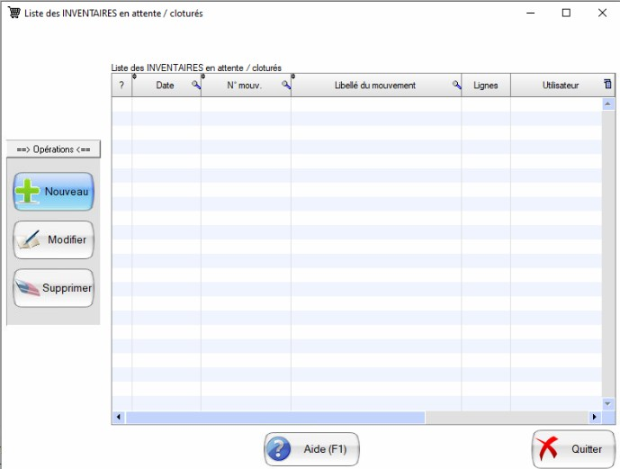
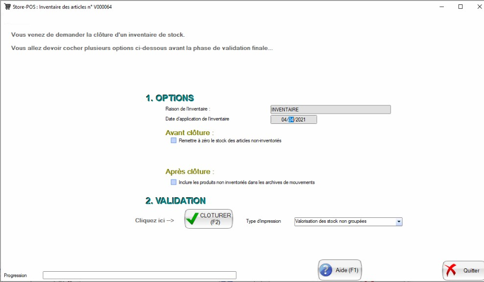
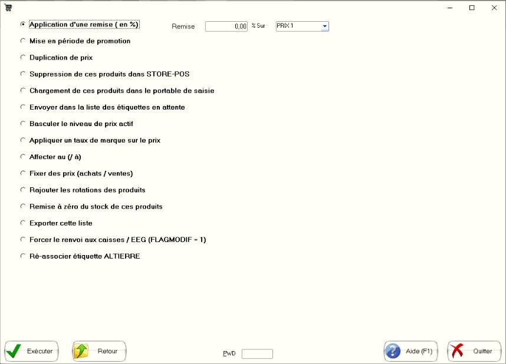

Procedures Pop Achat et Aemsoft
Pour importer une commande à partir de popachat
Import des prix
Pour le moment il n'y a pas de module d'import des prix seuls.
Avant d'exporter les fichiers, bien vérifier que les produits n'ont pas d'anomalies:
- les contenances et unités de contenance sont correctes
- le groupe du produit est correct (ça détermine l'apparition en caisse.
- le produit est pesé ou non.
dans le menu validation, cliquer sur le lien
.
Sur aemsoft
Vérifier que les imports ont bien été réalisés.
- Les prix sont correct.
- Vérifier que les produits en caisse sont bien les bons (groupes): on pourra trier par fruits et légumes et voir ceux qui sont au poids ou non.
- Vérifier que les produits pesés le sont bien: on pourra trier par fruits et légumes et voir ceux qui sont au poids ou non.
dans le menu validation, cliquer sur le lien
.
Un fichier est alors téléchargé sur l'ordinateur.
- Gestion/fournisseur/bon de commande
- Selectionner le founisseur/Chosir
- Saisir la date de réception
- Choisir le bouton importer depuis (avec l'icone excel)
- Saisir ok et choisir le fichier
- Pour valider choisir le bouton imprimer (et l'imprimer pour mémoire).
Récupération des données
Code postal
Statistiques/Résultats Archivés/Journal de Caisse/Résultats prédéfinis/Zone de chalandise - code postal
Pour rechercher une référence
Gestion/Produits/Fiche/loupe
Pour importer des prix
utiliser Gestion/Produits/Importer des Produits, choisir Modification et choisir le format MISE A JOUR P ACHAT UNIQUEMENT XLS
Ne fonctionne pas!
Pour importer ne pas valider le fournisseur sinon ça applique le fournisseur à tous les produits.
Pour mettre à jour la base:
-
Mouvement de Stock, Archives des mouvements, choisir la période, sélectionner les 5 "Afficher", sauvegarder (click droit) avec un nom du type:
stockMars2021-03-02-2056.xls ou xlsx 2056 est l'heure.
-
Stock, Etat des stocks, Archives des mouvements, choisir la période, sélectionner les 5 "Afficher", sauvegarder (click droit) avec un nom du type:
stockMars2021-03-02-2056.xls ou xlsx 2056 est l'heure.
- PLU: Statistiques/Resultats archivés/Ventes PLU: , sauvegarder (click droit) avec un nom du type:
pluMars2021-03-02-2056.xls où xlsx 2056 est l'heure.
- Journal de Caisse: Statistiques/Resultats archivé(s!)/Journal de caisse/Edition/Recherche choisir la période: , sauvegarder (click droit) avec un nom du type:
pluMars2021-03-02-2056.xls où xlsx 2056 est l'heure.
- Articles: Boutton Liste,boutton Recherche, sauvegarder (click droit) avec un nom du type:
listeMars2021-03-02-2056.xls où xlsx 2056 est l'heure.
Pour faire un inventaire partiel
Sur aemsoft
- Stock/Saisie des Inventaires/Standard.
- Choisir ou importer la liste des inventaires.
- Valider en ne remettant pas à 0.
Impression des étiquettes sur l'imprimante à étiquettes
PROCEDURE IMPRESSION ETIQUETTES PAIN
- Clique sur l’icône « IMPRESSION D’ETIQUETTES » qui se situe sur le bureau de ce pc (en haut à droite)
- Clique sur Pains.
- Sélectionne l’article où tu as besoin d’étiquettes.
- Clique sur l’icône imprimante dans la barre du haut
- Dans « copie » saisie le nombre d’étiquettes que tu veux.
- Assure-toi que l’imprimante blanche TOSHIBA est branchée (courant et port USB).
PROCEDURE IMPRESSION ETIQUETTES GESTION DES MEMBRES.
- Clique sur l’icône « IMPRESSION D’ETIQUETTES » qui se situe sur le bureau de ce pc (en haut à droite)
- Clique sur « Compte Pré Payés ».
- Double clique sur le code-barres qui s’affiche au milieu de ton écran et note bien la plage de code-barres qui a déjà été créée. Il ne faut jamais faire de doublon !
- La fenêtre « Propriété du code-barres » s’affiche.
- Dans « Données Intégrées » saisis le numéro du premier compte pré payés que tu veux imprimer.
- Clique sur fermer.
- Clique sur l’icône imprimante dans la barre du haut
- Dans Imprimer, saisie dans « Numéro de saisie » le nombre d’étiquettes que tu veux. La première aura le numéro que tu as saisi au point 5. Les suivantes auront +1.
- Assure-toi que l’imprimante blanche TOSHIBA est branchée (courant et port USB).
- Clique sur Imprimer en bas de la fenêtre.
- Avant de sortir de la cession, clique dans le texte au-dessus du code-barres et modifie-le en tapant le début et la fin de la série que tu viens de réaliser. C’est très important car on évite ainsi les doublons.
Modifier et travailler avec la tare
Aemsoft est intervenu sur la tare pour passer à une précision de 2g comme les balances.
Pour que la balance le prenne en compte, il faut allumer la balance puis sur store-pos: TPV/Transfer des modifications de fichiers/Tout transférer
Ensuite, sur la caisse, sortir du logiciel: clavier 444 puis redémarrer le logiciel et la nouvelle tare est prise en compte.
Pour modifier la valeur de la tare: CONFIGURER, tare et en face d'un numéro (entier) saisir la tare: pour le moment j'ai mis 4g (poids d'un petit sachet papier)
Pour appliquer le changement de tare sur un filtre: liste/appliquer un filtre/opération/
Appliquer des opérations à un groupe de produits
Pour appliquer une opération sur un filtre: liste/appliquer un filtre/opération/
Choix de menus
Prix moyen pondéré
Le prix moyen pondéré correspond à la valorisations des stocks, il n'y pas a de gestion FIFO, LILO dans store-pos.
Appliquer des promotions
Pour appliquer des promotions sur un produit, il suffit d'aller sur la fiche du produit sélectionné, choisir l'onglet VENTES (F5), proposer un prix de PROMO 4 et des dates de Promotion. La promotion s'appliquera à partir de la date
de début de promotion.
Si on veut que la promotion s'applique à partir du jour courant, il faut forcer l'envoi de l'information à la caisse dans TPV/Transfer des modifications des fiches avec la caisse allumée. La promotion sera
alors activée dans la caisse et dans store-pos (sinon elle ne s'active pas).
La différence entre le CA BRUT et le CA NET correspond aux remises en caisse (pas aux promotions).